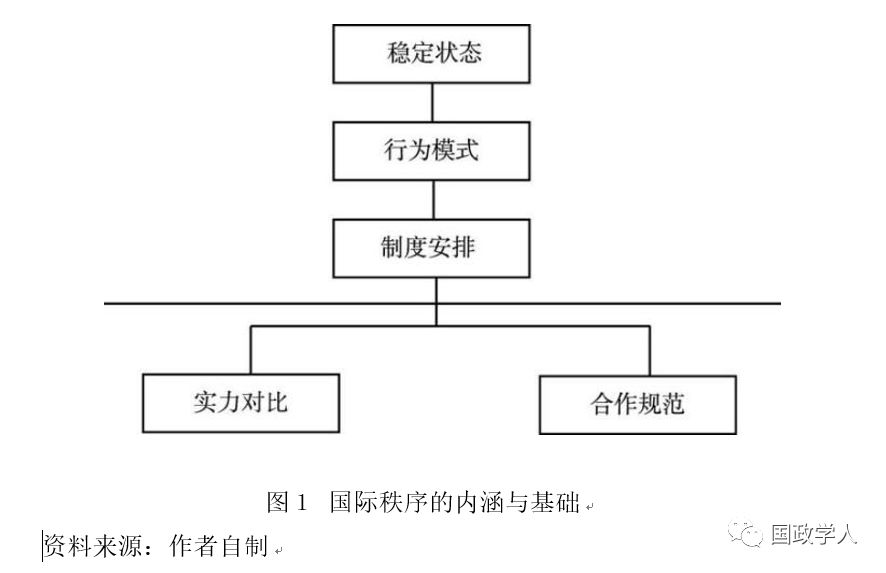
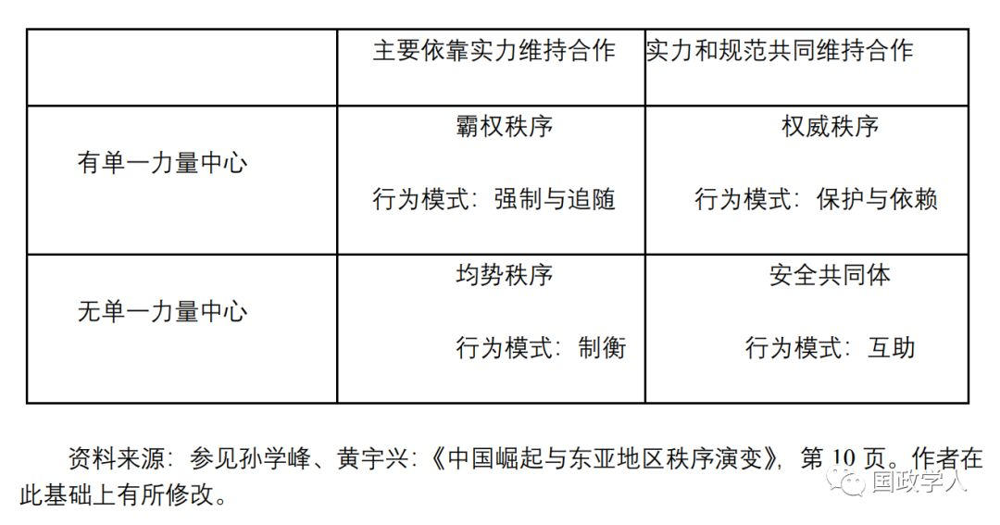
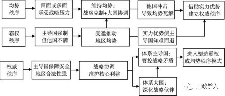

收录于合集

简 介
【 作者 】孙学峰，清华大学国际关系研究院教授。
【 来源 】《当代亚太》2018年第6期。
【 编辑】 李宗芳
【 校对 】彭小朵 刘孝玉
摘要
从实力转移入手分析国际秩序转型是学界通行的研究路径，文章尝试将这一研究路径反转，集中关注 既有地区安全秩序如何塑造大国崛起进程 。研究发现， 不同安全秩序下有效缓解崛起困境的核心挑战和战略选择各具特点 。均势秩序下的核心挑战是两线或多线同时遭遇制衡，主动维持均势不但可以规避这一核心约束，而且有助于崛起国利用均势瓦解塑造权威秩序，走出崛起困境。霸权秩序下的核心挑战在于主导国强制能力突出，缓解崛起困境的关键是崛起国根据自身实力应邀推动地区均势。权威秩序下，主导国实力和规范优势的双重约束导致缓解崛起困境更为困难。确保核心利益基础上的战略协调一方面可以最大限度管控双重压力，同时可为权威秩序转型 （转向均势或霸权秩序）做好准备。这些发现一定程度上丰富了国际秩序转型和崛起战略的理论研究，同时有助于中国探索适应不同周边安全秩序的战略选择。
关键词： 国际秩序 地区安全 大国关系 崛起困境
正 文
一、导言
国际秩序转型是国际关系研究中至关重要的理论问题，相关研究常常与大国竞争和体系战争密切相连。具体而言，学者们关注的主要问题包括：崛起国对既有秩序的冲击及其引发体系战争的条件；体系战争胜利后主导国塑造国际秩序的战略选择及其效果；主导国如何化解崛起国对现存国际秩序的冲击；以及核武器等因素对国际秩序稳定的影响等。
2008年全球性金融危机之后，有关美国所主导的自由主义国际秩序转型的讨论逐步成为国际关系学界关注的重要问题。从既有的研究成果看，学者们关注的问题既有明显的延续性，如讨论中国崛起对当前国际秩序和东亚秩序的影响，美国化解中国挑战的前景等；同时也出现了一些新的视角和研究问题，如美国等西方国家的内政变化对自由主义国际秩序的冲击，以及中国塑造国际规范和国际秩序的思路等。
尽管学者们的研究视野不断拓宽，但是其核心还是围绕崛起国对既有秩序的冲击展开，即崛起国的实力／战略／特征是自变量，既有秩序的延续与变化是因变量。与此形成对比的是， 学界较少关注在适应和推动秩序转型的过程中 ， 既有秩序对崛起国的约束及其后果 ， 从而一定程度上阻碍了我们围绕国际秩序转型的知识积累 。正如唐世平所言，仅凭行动和观念本身无法充分解释大多数社会结果。除了行动和观念，我们还需要考虑社会情境———来自先前阶段的社会结果。换言之，我们若关注实力转移背景下的国际秩序转型，必须重视既有秩序对这一变化过程的影响。
从这一思路出发，本文将 重点关注既有地区安全秩序对大国崛起进程的影响 ：其一，安全秩序涉及维护国家生存和体系稳定的行为模式和合作规范，相对于国家间经济领域的互动更具优先性。其二，安全挑战往往因地区差异而呈现不同的特点，即使所谓的全球安全问题，具体到不同地区其轻重缓急也各不相同。其三，国际秩序转型过程中，崛起国的周边地区和体系核心区域的安全秩序对其崛起进程影响最为直接也最为关键，其作用次序往往是周边秩序在先，然后逐步感受到核心地区秩序的制约。对于周边地区就是体系核心区域的崛起国而言，地区安全秩序的影响就更加不言自明了。
除了导言之外，本文还包括五个部分。第二部分建立地区安全秩序塑造崛起战略效果的理论框架。第三至第五部分为案例比较分析，分别关注德国、美国和苏联崛起进程中的典型案例，检验论文提出的研究假设和逻辑机制。在总结研究发现的基础上，结论部分提出了中国适应和转化既有周边安全秩序约束的思路和建议。
二、地区安全秩序与崛起战略
地区安全秩序是指既定地理范围内国家维护安全的行为模式及其塑造的稳定均衡状态 。 从实力分配和规范认同两个方面入手，地区安全秩序可划分为四个理想类型，即 “ 均势秩序 ”“ 霸权秩序 ” “ 权威秩序 ” 和 “ 共同体秩序 ” ，以此为基础，我们建立了地区安全秩序塑造崛起战略及其效果的分析框架。
（一）地区安全秩序及类型
“秩序”是社会学和政治学中的关键概念，主要源于有关社会秩序的探讨。社会秩序是社会生活中存在的持续行为模式，使得人们能够极有信心地预期能从其他人那里获得合作。 布尔从社会秩序的特征出发提出，国际秩序指的是国际行为模式，其追求国际社会基本、主要或普遍的目标，具体包括：维持国家体系和国家社会本身的生存、维护国家的独立或外部主权、国际社会成员之间没有爆发战争、限制暴力行为、信守承诺等。阎学通则进一步将国际秩序定义为国际体系中依据国际规范采取非暴力方式处理冲突的状态。
阿拉加帕则强调，国际社会中的秩序是指国家间正式或非正式的安排，这些安排为国家提供了一种可预测的、稳定的国际环境，使它们能够通过基于规则的互动来追求集体目标，如和平解决争端，和平实现政治变革等。周方银也持类似观点，他提出国际秩序是国家在一定的实力结构下，为实现自身利益，在重复博弈过程中形成的稳定均衡状态，并由此使得国家行为模式具有较高的可预测性，国家间合作保持在较为稳定的水平，国际行为体对国家间的互动形成较为稳定和可靠的预期。

根据以上有关秩序和国际秩序的定义，本文将地区安全秩序界定为： 既定地理范围内国家维护安全的行为模式以及由此塑造的稳定均衡状态 。秩序稳定主要体现在两个方面：一是国家安全行为模式的持续可预测；二是安全合作得以稳定实现，主要包括国家生存和主权得以维护、安全制度和组织运转良好、地区和平得以延续等。秩序稳定的基础源自实力对比和合作规范，而制度安排则是两者发挥作用的平台和机制 （参见图1）。正如周方银所言，实力对比为国际体系成员提供了重要机遇和无法回避的制约，而合作得以稳定实现往往意味着现有合作规范具有较高的可接受度，从而降低了成员国对秩序的不满和反对，增强了秩序的合法性和稳定性。在谈及拉丁美洲的秩序稳定时，摩根索也曾指出，除了面临地区外国家的挑战，地区成员的态度也至关重要。
因此， 我们可根据实力分配和规范认同两个方面对地区安全秩序进行类型划分 。 根据实力对比情况 ， 地区安全秩序可分为 “ 拥有单一力量中心 ” 和 “ 缺乏单一力量中心 ” 两类 。 拥有单一力量中心的地区，力量中心拥有突出的实力优势。比如，19世纪末以来，美国在加勒比海地区就一直是毫无争议的地区力量中心，而在近代欧洲地区则一直缺乏这样的单一力量中心。

根据规范认同情况 ， 地区安全秩序可分为认可程度较低和较高两个类型 ， 而区分不同接受程度的操作性标准是地区内国家遵守合作规范的基础 。 认可程度较低是指地 区内国家遵守地区规则主要依靠外在力量的限制 ，即使地区国家形式上认可力量中心，也会利用机会挑战既有规范，结果导致主导国须通过武力维持合作规范。冷战时期，东欧国家遵守社会主义阵营合作规范就是较为典型的例证。 认可程度较高是指地区内国家遵守地区规则主要依靠其内在合理性 。 外在力量的变化依然能对遵约行为产生影响，但影响已大大降低。对于地区力量中心倡导的合作规范，地区国家不但形式上认可，实践上也努力践行。有关规则的不同意见，地区国家往往是在承认基本原则的基础上通过谈判协商加以解决。
按照以上分类标准， **我们可以把地区安全秩序划分为四种理想类型 **（ 参见表 1 ） ， 即 “霸权秩序”，其核心行为模式为强制 （主导国）和追随 （其他国家），典型例子是20世纪初至20世纪30年代中期美国主导的拉美地区秩序；“权威秩序”，其核心行为模式是保护 （主导国）和依赖 （从属国），典型例子包括明清时期东亚地区的 “华夷秩序”以及二战后美国在西欧形成的安全秩序；“均势秩序”，其核心行为模式是自助和制衡，典型例子是拿破仑战争至二战结束之间的欧洲秩序；以及 “共同体秩序”，其核心行为模式是互助。
需要指出的是，自近代国际关系体系形成以来，共同体秩序尚未从理念转化为实践，而其他三种秩序则在不同时代和不同地区均曾出现过或者就是当下特定地区秩序的核心特征。因此，下文我们将集中关注均势、霸权和权威三种秩序类型，并尝试建立解释既有地区安全秩序塑造崛起战略效果的理论框架。
（二）地区安全秩序与崛起战略
根据崛起困境理论，崛起大国的核心外部挑战在于能否有效缓解崛起困境，即在实力上升和影响力扩展的过程中，能否尽可能降低自身承受的安全压力，将安全压力保持在自身实力可以承受的范围之内。在缓解崛起困境的过程中，不同的地区安全秩序所形成的约束机制各具特点，有效适应和转化秩序约束的战略也有所差异，但其核心都是尽可能让施压国在秩序延续和转化过程中处于更加左右为难的位置。
1.均势秩序下的战略选择
均势秩序下，崛起国周边地区主要国家的实力分布处于相对均衡的状态。崛起国实力逐步上升会加剧利益攸关大国和周边国家的疑虑，担心崛起国将逐步打破地区均势，危及体系和地区大国的自主地位和地区影响力。为此，这些国家会密切关注崛起国的战略取向并采取相应的制衡措施，确保地区均势秩序的延续与稳定。更为重要的是，这些国家针对崛起国的制衡行为符合均势秩序下的安全规范，因而会进一步增加崛起国缓解安全压力的难度。在概括一战之前欧洲国际关系的总体面貌时，施罗德就曾坦言，“尽管每个大国对于所期望的均势有着不同的定义，并在按照不相容的路径追求之，但保持均势的观念仍被当作一种理想而广泛信奉 ……一场即便获胜的大战会极具风险和代价，而且可能适得其反，会通过摧毁现存的均势或消灭关键的行为体而带来新的风险”。
因此， 面对既有的均势秩序 ， 崛起国的战略重心不是主动打破均势 ， 而是要坚持自我克制 ， 尽力维持均势 ， 避免区域内体系大国的联合制衡 ， 特别要防止两线或多线安全矛盾同时激化的不利局面 。 如果崛起国的周边地区就是国际体系的核心地区，崛起国则更要主动维持地区均势秩序，否则会促使区域内外的体系大国形成制衡联盟，其核心原因是一旦崛起国成功瓦解体系核心区域的均势秩序，将直接导致既有体系大国的实力地位严重下滑，国家生存也将遭遇严峻挑战。因此，这些国家联合制衡的意愿非常坚决，不但能够克服意识形态分歧等合作障碍，而且可以有效整合实力，使崛起国陷入两线或多线作战并导致崛起进程中断。例如，20世纪20年代末至40年代中期，德国武力挑战欧洲均势秩序，结果遭遇了英美苏等欧洲内外体系大国的联合制衡，最终战败并导致国家分裂。

图2 地区安全秩序与崛起战略
资料来源：作者自制。
不过，一旦体系核心区域的均势秩序遭遇其他国家冲击，崛起国可以主动推进与遭受威胁的体系大国和周边国家的战略合作，特别是要安抚孤立无援的体系大国，并在战略合作过程中，主动引导地区均势秩序向更为有利于自身崛起的方向发展。如既有均势秩序遭遇冲击瓦解，崛起国可利用实力优势和战略机遇，倡导建立更为合理的国际规范，为战后确立权威秩序创造有利条件。 二战结束前后美国在西欧地区的战略实践就是较为典型的成功案例 。
即使周边地区不是体系核心区域 ， 崛起国也不必主动挑战地区均势秩序 ， 而是要将周边地区和核心地区的均势秩序联系起来 。例如，西奥多·罗斯福就更多的是从欧洲范围考虑其对外政策，力图通过利益范围取得大国的力量平衡。在这一过程中，崛起国可以利用核心地区秩序的变化，逐步转化周边地区均势。例如，核心地区均势遭遇其他崛起国的挑战，使得体系大国必须收缩力量，确保核心地区均势秩序稳定。在这种情况下，边缘地区的均势秩序会自动弱化甚至瓦解。此时崛起国可以充分把握战略机遇，推动周边地区向权威秩序转化，并尽力避免周边形成霸权秩序，否则只能依靠强制力量维持主导地位，不但维持成本明显上升，而且也无法有效缓解崛起困境。典型历史案例是20世纪的前30年美国未能有效推动拉美地区向权威秩序转化，其主导地位和倡导的安全合作规范遭到地区国家的一致批评和反对。
2.霸权秩序下的战略选择
霸权秩序下，崛起国周边地区存在实力优势明显的主导国。结构现实主义认为，国家在国际体系中的相对权力位置与其国家利益密切相关。国际体系中相对实力地位最高的主导国，其整体国家利益就是维持其体系的主导地位。因此，体系主导国对于崛起国影响力的扩展十分敏感，施加安全压力的意愿也更加坚决。尤其是特定历史阶段国际体系内只有一个崛起大国时，主导国对崛起国实力地位的上升和影响力的扩展会更加敏感。
不过，霸权秩序下的主导国维持地区秩序主要依靠强力干涉和利益诱惑，其倡导的地区安全规范的认可程度较低。因此， 对于崛起国而言 ， 不论其实力地位相对于主导国是处于优势还是劣势 ， 都应充分利用地区国家对主导国的不满以及地区国家之间的战略矛盾 ， 受邀介入地区安全问题 ， 借此推动地区霸权秩序走向符合崛起国实力阶段和利益需求的均势秩序 ， 进而有效缓解崛起困境 。
当 相对实力弱于主导国时 ， 崛起国受邀推动地区均势的逻辑比较容易理解 ，其核心机制在于实力处于劣势，难以支撑直接瓦解主导国霸权秩序的目标。20世纪50年代中期以后，苏联介入中东地区的经验和教训就是典型的历史案例。当相对实力强于地区主导国时，崛起国依然要坚持受邀介入，其核心原因在于崛起国强力介入会导致体系与地区主导国的联合制衡。因此，此时崛起国可以尽可能创造机会，主动扩大与地区主导国的战略合作，以扩展地区影响力，同时弱化体系主导国的地区影响力，推动地区逐步形成对自身更为有利的均势。20世纪50年代中期至冷战结束，苏联塑造南亚安全秩序的实践就是较为成功的案例。
如果特定阶段国际体系内只有崛起国的实力超越了体系主导国 ， 崛起国可利用实力优势和战略机会 ， 逐步瓦解体系主导国的地区霸权秩序 ， 促使其知难而退 。 体系主导国知难而退源于两个机制，一是体系主导国在其他地区面临更为严峻的安全威胁，遵循两害相权取其轻的逻辑，放弃地区霸权秩序。二是体系内其他国家实力较弱，即使霸权国与这些国家结成同盟，也难以制约崛起国。因此，崛起国可以凭借实力优势不但成为地区主导国，而且可以利用实力地位优势塑造地区权威秩序。
3.权威秩序下的战略选择
权威秩序下 ， 崛起国可以利用地区国家与主导国或地区国家之间的安全分歧缓解压力 ， 但不宜借此推动地区向均势或霸权秩序转型 。 首先，对于主导国而言，权威秩序向均势或霸权秩序转移是对其核心利益的巨大挑战，因而不但十分敏感而且会及时动员实力资源应对崛起国的挑战。更为重要的是，主导国的合法性优势会帮助其更为有效地动员其安全保护国 （地区），从而使崛起国转化地区秩序的努力面临难以克服的战略压力。其次，对于高度依赖主导国安全保护的国家而言，权威秩序弱化或瓦解将对其生存安全构成重大挑战，原因在于这些国家无法依靠自身力量或彼此之间的合作维护生存安全。因此，这些国家将尽可能与主导国紧密合作，阻止崛起国弱化权威秩序的努力。
更为关键的是，即使不依赖主导国安全保护的国家也不大可能全力支持崛起国。其一，这些自助国家与崛起国的战略矛盾可能是其最为主要的外部威胁。因此，这些国家会主动推进与主导国及其安全体系的战略合作，以有效化解来自崛起国的威胁。其二，即使与崛起国没有安全矛盾甚至需要争取崛起国的战略支持，这些国家也不会积极支持崛起国弱化权威秩序，主要原因在于主导国实力和合法性的双重优势会使这些国家承受无法弥补的战略损失。因此，这些国家更可能利用崛起国与主导国及其安全体系之间的矛盾左右逢源或相互对冲，以使其在地区秩序转化过程中处于更为有利的位置。
因此， 崛起国要利用一切可能的机会 ， 推进与主导国及其安全体系的协调 ， 尽可能避免与权威秩序的直接对抗 。 例如，1967年1月，时任苏联外长葛罗米柯就曾提出，在缓和的条件下更易于巩固和提高苏联的国际地位。要尽量避免同美国发生正面冲突，特别要避免发生核战争；在解决某些重大国际问题时，应注意同美国合作的可能性，同时照顾与其他国家的关系。
战略协调主要包括两个方面 ： ** 一是双边协调** ， 主要管控涉及崛起国核心利益和直接影响主导国权威的安全矛盾 。 这些矛盾其他国家无法直接介入，而且直接影响崛起国和主导国双边关系的稳定和地区权威秩序的延续。因此，崛起国要持续不断地推进双边协调，防止此类安全矛盾失控。冷战时期的美苏军控谈判就是较为典型的例证。 二是地区多边协调 ， **主要管控涉及权威秩序稳定和多个地区国家 **（ 包括崛起国 ） 核心或重要利益的安全问题 。 多边协调不但有助于崛起国扩大与主导国及其安全体系之间的共同利益，同时可以提升其管控战略分歧措施的合法性，从而最大限度地避免与主导国的直接对抗。此外，崛起国还可以利用其他地区的安全问题，推进与主导国的战略协调，为区域内的双边或多边协调创造更为有利的合作气氛和条件。
在战略克制和战略协调的基础上，崛起国要更为坚定地维护核心安全利益，确保周边国家不主动利用主导国的双重优势挑战其核心利益，主导国不主动利用双重优势支持其他国家挑战崛起国的利益底线。如核心安全利益红线遭遇挑战，崛起国需综合利用军事强制和合法化战略等多种举措，一方面确保核心利益不受侵犯，另一方面要让相关国家为其挑战行为付出超出其预期的损失和代价，驱使这些国家终止挑战行为，并有效威慑其他国家不再发起类似挑战。有效威慑周边国家不挑战利益红线也有助于崛起国与主导国避免直接对抗，从而更为有效地缓解崛起困境。
如果周边权威秩序由体系大国而非主导国维持，那么无论崛起国实力处于优势还是劣势，都要与体系大国及其安全体系保持战略协调，积极管控安全矛盾，不断扩大共同战略利益。如果体系大国与体系主导国存在战略矛盾，崛起国与体系大国安全体系的合作基础会更为扎实。不过，即使如此，崛起国也不宜积极推动与体系大国及其安全体系形成新的军事同盟，这一方面会刺激体系主导国及其安全体系，推动其安全体系内部深化合作，吸引更多外部国家接受安全保护；另一方面，也会恶化体系大国及其安全体系对崛起国的威胁认知，其原因在于地区国家更关注当地的威胁而不是超级大国之间的对抗。所以， 崛起国试图将周边国家纳入与体系主导国的对抗将会适得其反 ， 很可能推动体系大国与体系主导国两个安全体系的战略合作 ， 结果导致崛起困境持续恶化 。
即使相对实力超越主导国之后，崛起国也不宜主动转化既有权威秩序，而是要在维持崛起势头的前提下， 等待主导国安全体系内部矛盾动摇或瓦解权威秩序 。 此时主导国安全体系矛盾的核心在于责任分担。一方面，随着综合实力的下降，主导国迫切希望接受其安全保护的国家承担更大的责任，从而继续有效维持权威体系。与此同时，接受其安全保护的国家并不愿意分担更大的责任，主要原因在于这些国家认为，由于长期处于被保护状态，即使增加投入也没有实质意义。更为重要的是，如果崛起国坚持战略克制和战略协调，这些国家的威胁感会相对弱化，增加投入的决心会进一步弱化。
随着主导 国实力和 / 或合法性的下降 ， 地区国家 （ 包括部分依赖主导国安全保护的国家 ） 可能会主动深化与崛起国的安全合作 ， 并推动崛起国为地区稳定承担更大的责任 。 此时崛起国依然要量力而行 ， 不宜主动弱化权威秩序 。 一是在没有经历重大危机冲击之前，长期依赖主导国保护的国家依然会在较大程度上认可主导国所倡导的规范的合法性。这些国家寻求与崛起国合作主要源于主导国安全保护的可靠性下降，而非认可崛起国倡导的安全规范。二是此时承担超越自身能力的安全责任不但会削弱崛起国的实力优势，而且会强化地区国家的威胁认知，弱化崛起国的地区合法性，从而进一步巩固既有的权威秩序。
因此，这一阶段崛起国依然要充分意识到既有权威秩序的韧性，坚持战略克制和战略协调，寻找与主导国共同应对危机的战略机遇；与此同时，根据权威秩序的转化方向，按照适应和转化霸权或均势秩序的思路，持续塑造地区秩序朝着有利于自身崛起的方向发展，并最终利用实力优势和战略机遇建立自身主导的权威秩序。
概而言之， 权威秩序下 ， 崛起国面临的制约和压力最为突出 ， 需要崛起国持续坚持战略协调 ， 为权威秩序弱化和转型做好实力和规范准备 。 无论权威还是霸权秩序的最终转化结果如何 ， 其中都要经历均势秩序阶段 ， 崛起国都要为两线或多线同时遭遇制衡做好准备 ， 而崛起国主动维护而非挑战均势则始终是缓解这一秩序约束的关键所在 。
三、欧洲安全秩序与德国崛起战略
俾斯麦时期，德国坚持维持欧洲均势，积极推进大国协调，较为有效地缓解了崛起困境。而一战之前，德国主动挑战地区均势，结果遭遇多线制衡，不但崛起困境恶化，而且最终因战败而结束了崛起进程。
（一）案例1：维持欧洲均势 （1871～1890）
1871年德国统一，欧洲大国的实力对比发生了较为明显的变化，德国开始在欧洲均势中处于相对有利的位置，但俾斯麦也清楚地意识到，无论奥匈帝国也好，俄国也好，英国也好，都不希望德国进一步强大起来。1875年的德法战争危机带来的重大外交挫折进一步说明，没有国家愿意欧洲均势继续朝着有利于德国的方向转化。
因此，俾斯麦的战略核心就是要维持欧洲均势，通过外交手段而非战争手段提高德国的影响力。正如俾斯麦于1870年所言，要通过对德国影响正面与和平的应用，弱化德国向大国地位成长所引发的恶感。但德国统一改变了欧洲的地缘政治格局，欧洲体系的灵活性减小。正如基辛格所言，新的国际体系只有少数重要的大国，难以通过谈判实现一般可以接受的均势，或如果不经过不断的实力较量，形成的均势也难以维持。为了克服维持均势的困难，俾斯麦主要采取了两个策略：一是利用大国矛盾，建立同盟体系；二是把欧洲大国注意力转到其他地区，激化大国矛盾，转而巩固同盟，维持欧洲均势。
1.缔结德奥同盟和三皇同盟
普法战争结束后，德法矛盾异常尖锐，而当时的英国依然对欧洲大陆事务持孤立主义态度。因此，处理好与俄国和奥匈的关系成为德国维护欧洲均势的关键所在。经过俾斯麦的努力，1873年，奥匈帝国、德国和俄国一同加入了三皇同盟。表面上，这是一个保守势力的神圣同盟；实际上，其目的是三国相互约定，不与法国结盟。除了孤立法国之外，俾斯麦还希望俄国和奥匈能协调彼此在近东的分歧，从而有助于德国维持欧洲均势并获得好处。
不过，1875-1878年的近东危机使俄奥协调陷于破裂。柏林会议后，德俄关系也严重恶化，三皇同盟终于分崩离析。为取得对欧洲局势的控制，俾斯麦德国走上了正式结盟的道路。1897年10月缔结的德奥同盟是俾斯麦欧洲同盟体系的第一个环节，不但有效地阻止了奥匈和俄国与法国的合作，而且一定程度上能够抑制俄法接近，使德国摆脱了三面受敌的危险。更为关键的是，盟约基本符合英国在欧洲大陆的利益，因为条约可以制约俄国，同时又不必把英国推上反俄的前线或破坏英法关系。
当然，德奥同盟的签订并不意味着俾斯麦准备放弃俄国。1879年至1880年秋冬，俄国重新审定了对外政策，决定与德奥订立条约，以避免德国的敌对和严重的国际孤立。为此，俾斯麦充分把握机会，于1881年6月成功推动三皇同盟重建，确保了德国在欧洲均势秩序中较为有利的地位。但1881年至1882年冬，奥地利镇压波斯尼亚起义导致俄法出现接近势头。俾斯麦意识到三皇同盟并没有带来绝对的安全保证，于是转而积极推进德奥意三国缔结同盟。1882年5月20日，三国结束谈判正式签约。从条约内容看，三国同盟是针对法俄的同盟，剥夺了法意结盟的可能，并附加声明强调条约条款所述之任何情形都不得认为是针对英国的。
两个盟约的缔结使德国占据了欧洲均势中较为有利的位置，而自柏林会议以来英国的有利态势则逐步成为过去。俾斯麦充分意识到了欧洲大陆均势变化带来的危险，因此把参与殖民事务作为调整欧洲同盟体系，减轻英国安全压力的重要手段。一方面，德国支持法国进行殖民扩张，以分散法国对德国的复仇情绪，同时加深法国与英国、意大利的矛盾；与此同时，德国鼓励英国为土耳其领土完整提供保障，将俄国拒于东欧之外，又利用英国阻止俄国对土耳其的保障，从而鼓励俄国在中亚进一步扩张，激化俄英矛盾。
为了应对法俄两国在欧洲以外的威胁，英国有赖于德国及其盟国的战略支持。在中亚，英国需要德国的支持以抵抗俄国的扩张。在埃及问题上，没有德国和三国同盟的支持，英国就无法贯彻金融改革。 俾斯麦充分意识到了英国的战略需求，并采取行动回应英国的战略关切。例如，英国倡导欧洲协调，德国就积极配合，促进希腊和摩洛哥问题的解决。尽管最终的解决方式并不能让英国完全满意，但还是借此表达了德国的善意。在埃及问题上，德国支持英国的立场，并主动回避在埃及债务问题上发挥关键作用，防止触及英国的核心利益。因此，在这一时期，几乎看不到英国敌视德国的迹象。
2．依据均势变化调整同盟
1885-1886年爆发的保加利亚危机导致俄国和奥匈帝国的关系急剧恶化。尽管俾斯麦极力维持三皇同盟的存在，但1887年 《三皇同盟条约》期满时，缔约方并没有续订条约。与此同时，1886-1887年德法两国边界出现了新的紧张对峙局面，期间德国争取俄国合作的努力也没有成功。德国国内舆论的反俄情绪随之逐步上升，军方敦促要与奥匈合作对俄国进行预防性打击，双方的关税战也恶化了双边政治关系。欧洲局势的变化促使俾斯麦不得不在顶住军方压力的同时，重新调整同盟体系，维持欧洲均势，确保德国继续处于有利位置。
俾斯麦的切入点是续订三国同盟。1886年秋续订谈判开始后，俾斯麦几乎接受了意大利的所有要求，同时提出采取德奥同时与意大利订立双边条约的方法延续三国同盟，以满足奥匈的要求。1887年2月，《三国同盟续约》在柏林签字， 此举不但使得德国拴住了意大利，而且可以通过意大利建立三国同盟与英国之间的协约关系。因此，俾斯麦一面利用三国同盟续订的机会促使意大利寻求同英国结成反法联合，一面利用各种渠道对英国政策施加影响。
尽管英国担心德国坐收渔利，但英国与法俄的深刻利益冲突依然是其关注的重点。当时的英国军方情报负责人曾表示，“法国和俄国是最可能与我们爆发战争的国家，我们能够想到的最为糟糕的联合是法俄结盟对付我们”。因此，英国更倾向于与三国同盟国家合作并希望能将其作为对付法俄的平衡力量。在俾斯麦的积极推进下，1887年2—3月间，英国与意大利、奥匈先后互换照会，订立了第一次 《地中海协定》。虽然德国没有参加这个协定，但俾斯麦对促成协定发挥了重要作用，并从中获得了重要利益。对于德国而言，协定有助于维持其与英国之间的合作，进而减小了法俄采取冒险行动的可能性。从某种意义上讲，德国已经把英国纳入了自己的外交轨道。
《三国同盟条约》和第一次 《地中海协定》的签署虽可能阻止法俄冒险，但并没有减小法俄接近的危险。为此，俾斯麦不断向俄国传递信息，表明德国无意进攻法国。在近东问题上，俾斯麦甚至表示，不会阻挠俄国在保加利亚或海峡方面采取必要的行动。陷入保加利亚危机困境的俄国认为，没有理由拒绝俾斯麦的帮助。1887年6月，两国签订了《再保险条约》。条约签订后，俾斯麦又利用英国在保加利亚问题上遭遇法俄联合施压的机会，积极推动英国与奥匈和意大利就维持近东和海峡现状达成一致，以使奥匈可以借重英国对抗俄国，减轻德国东西两线面临的压力。
英国首相索尔兹伯里虽认定德国此时要坐收渔利，但为了防止1885年的孤立重新出现，他依然写信告诉英国驻君士坦丁堡大使，英国只能帮忙，为俾斯麦火中取栗。不过，为变被动为主动，英国坚持德国必须明确表示支持《地中海协定》并承担责任。为了打消英国的顾虑，俾斯麦亲自致信索尔兹伯里表示，如果奥匈帝国的独立受到俄国侵略的威胁，或者英意遇到法国入侵的危险，德国将始终有责任进入战斗。为表明自己承诺的可靠性，俾斯麦还向英国驻德大使展示了1879年的德奥条约。
德国明确承诺支持奥匈一个月之后，英国与奥匈、意大利达成了第二次《地中海协定》。从内容上看，协定主要是在近东问题上针对俄国，与《再保险条约》形成互为补充的安排，使欧洲主要大国在近东及地中海地区相互牵制，同时阻止法俄联合，确保了德国在欧洲大陆均势中的有利地位。与此同时，英德之间也维持着默契，两国关系正处于当时十余年来最好的状态。总体而言，在俾斯麦的努力下，德国的崛起困境得到了较为有效的缓解。
（二）案例2：挑战欧洲均势 （1898—1914）
19-20世纪之交，德国逐步成为与英美并驾齐驱的经济强国。与此同时，德国开始有意识地抛弃俾斯麦以维持欧洲均势为核心的对外政策，转而推行 “世界政策”，直接挑战了英国的海上霸权和欧洲均势。为此，英国一方面加强海军军备，与德国展开了近十年的海军军备竞赛，同时调整与法俄的关系，以应对德国崛起的威胁。为了走出困境，德国尝试利用危机威胁法俄，拆散英国组织的敌对同盟，并试图组建反英的大陆同盟。这些举措进一步动摇了欧洲均势，结果导致德国的安全压力逐步增大，最终卷入一战并战败。
1.试图拆散 《英法协约》
20世纪初，面对德国的海军威胁，英国首先改善了与竞争对手法国的关系。1903年7月，两国正式开始讨论缔结协约。1904年2月日俄战争的爆发推动了两国协约的达成。协约虽然只字未提共同反德的问题，也没有附加军事协定，但确有防范德国冲击西欧均势的考虑。 英法关系的变化对德国冲击较大，表明反德同盟正在形成。为此，德国在尝试改善德俄关系受挫后，决定利用摩洛哥问题打击法国，迫使其让步以削弱英法合作。
1904年10月，法国与西班牙签订了划分摩洛哥势力范围的条约后，德国宰相比洛在国会宣称，摩洛哥的政治现状必须得以保持，德国在摩洛哥的经济利益必须受到保护。在访问摩洛哥期间，威廉二世公开向法国示威，反对法国在摩洛哥取得特殊地位，要求英法放弃在摩洛哥问题上的勾结。为阻挠法国在摩洛哥的计划，德国甚至以武力相威胁，由此引发了第一次摩洛哥危机。
面对德国的威胁，英国采取了坚定支持法国的政策。英国军方认为，德国若再次击垮法国将使德国实力进一步扩张并达到损害整个欧洲的地步。一旦这种性质的战争爆发，英国必须积极支持法国。保罗 ·肯尼迪认为，从此时起，维持欧洲均势成为德英两国改善关系的根本性障碍。1906年1-4月，欧美国家召开多边会议，以求平息摩洛哥危机。会议期间，除奥匈外，其他与会国家均支持法国， 为此德国不得不做出让步。
摩洛哥危机之后，意大利与三国同盟的合作趋于弱化，而英法则强化了合作。1906年1月10日，英国外交大臣格雷与法国大使会晤时表示，一旦德法之间因协约问题发生战争，英国不会听凭法国政府陷于困境。此前英国从未向法国做出过类似保证。随着战略关系的改善，英法两军的关系也日益密切。英国首相授权本国参谋人员开始与法国总参谋部展开军事会谈，希望在战争发生时两国能协同作战。1906年1月22日，英国总参谋部通知法国驻英使馆，英国设想必要时在15天内动员10万军队前往法国。虽然英国方面不愿意提供书面承诺，但军事会谈本身足以表明 《英法协约》具有了类似同盟条约的性质。历史学家认为，摩洛哥危机期间和此后英国的行动表明，英国对德政策发生了质的变化。
- 试图与俄国建立反英同盟
在利用摩洛哥问题打击 《英法协约》的同时，德国还希望利用日俄战争期间俄国需要支持之机，通过德俄结盟拆散法俄同盟或者组成反英大陆同盟，从而称霸欧洲。1904年10月的 “多格滩事件”导致英俄关系紧张，威廉二世随即致信俄皇，称英国有意阻拦德国给俄国海军供应煤炭，建议两国联合行动粉碎这一图谋，并迫使法国也参与其中。此后两国皇帝以通信方式就缔结盟约展开谈判，但最终不了了之。俄国担心，如果德俄结盟并借此逼迫法国进入大陆同盟，德国将确立其在欧洲大陆的霸权地位，对此俄国根本无法接受。
1905年5月，日俄战争中俄国战败，德国借机再次提出两国结盟。英国对此十分不安，担心德俄协定将打破欧洲均势，形成有利于德国的政治局面。为此，英国决定要安抚战败的俄国，以阻止德俄合作。1905年5月，英国表示，不再坚持土耳其完整和独立是其核心利益，不再认为俄国在君士坦丁堡的出现会对英国造成伤害。此外，“多格滩事件”发生后，英国通过接受国际仲裁使得事件最终得以和平解决。英国还向俄国保证，英日同盟续订没有任何干涉俄国合法行动的企图，也不寻求损害俄国的扩张政策。
与此同时，英国努力恢复俄国的欧洲大国地位以制衡德国，因为对于英国而言，恢复欧洲均势才是最为关键的问题。1905年年底，英国外交大臣格雷认为，同俄国缔结协定是对英法协定的自然补充。显然，这是1905年以后英德矛盾上升的必然结果。在此背景下，俄德合作遭遇了挫折，英俄关系则开始解冻。1907年8月两国签订 《英俄协定》，就波斯、阿富汗和西藏等问题达成妥协。此后，英国将全部精力转移到欧洲事务上，陆军开始筹建特遣队跨越北海作战。法国也不必再担心英俄两国开战使自己陷入左右为难的困境之中，进而更加希望创建对抗德国的三国同盟，欧洲初步形成了英俄法协约集团共同对德的局面。
3.挑起两次危机
应当指出的是，此时三国协约还远未就共同对德达成较为一致的意见，但德国在俄奥冲突中强迫俄国让步的做法，进一步把俄国推向了英国。1908年10月，奥匈宣布兼并波斯尼亚和黑塞哥维那，俄奥两国在巴尔干的矛盾迅速激化，德国则表示无条件支持奥匈。1909年初，德国参谋总长明确表示，如俄国干涉奥塞纠纷引起冲突，德国也要履行 《德奥同盟条约》，支持奥匈对俄国作战。 德国还激烈反对俄国通过国际会议解决冲突的建议，强迫俄国同意奥匈的兼并。由于实力处于劣势，俄国不得以接受了德国的要求，但危机导致俄德之间的关系恶化到无可挽回的地步。此后，俄国决心进一步向英法靠拢，并着手大规模军备以对抗德国。
波斯尼亚危机期间，德法因摩洛哥问题再起冲突。德国担心波斯尼亚事件已使欧洲形成紧张局势，不愿再激化德法矛盾，决定采取和平解决的方针。威廉二世对德国宰相说，摩洛哥事件现在必须迅速明确地解决，我们不妨体面地退出来，以便消除与法国的摩擦。由于德国奉行缓和态度，1909年2月两国签署协定，重申实施有利于法国的 《阿尔赫西拉斯条约》，两国关系因此得到一定程度的改善。
但1911年法国出兵摩洛哥后，德国的态度变得异常强硬，并决定派军舰到阿加迪尔港，第二次摩洛哥危机就此爆发。在随后的谈判中，因补偿条件难以达成一致，德国外交大臣甚至威胁法国外长要开战。此时，英国出面干涉并表示，在摩洛哥问题上英国不惜与德国一战。面对英国坚决的态度，德国重新与法国展开谈判并最终达成一致。虽然德国的补偿要求得到了部分满足，但危机再次使英国意识到德国是危险的敌人。为此英国强化了对欧洲大陆的承诺，提出绝不会允许另一个大国击垮或掠夺像法国这样友好的国家。从那时起，如果卷入大陆战争，支持法国已成为英国毫无异议的大战略。
1912年7月，英法秘密签订了一份海军协定。三个月后，格雷在给法国驻英大使的信中宣布，如果两国其中之一遭受第三大国的无端攻击或威胁时，两国政府应立即磋商采取共同行动来防止攻击，维护和平。1913年2月，两国海军拟定了一项备忘录，内容是英国承担保卫法国大西洋沿岸地区的责任，法国则承担保护英国在地中海利益的责任。1914年夏，英国内阁同意与俄国展开海军对话。
协约国强化合作导致德国愈加依赖奥匈，因此在巴尔干问题上更加坚定地支持奥匈。1912年10月，第一次巴尔干战争爆发。德国和奥匈坚决支持土耳其，拒绝巴尔干同盟所提出的要求，以抵制俄国势力的扩张。第二次巴尔干战争中，德奥支持阿尔巴尼亚，共同向俄国支持的塞尔维亚发出最后通牒，迫使塞尔维亚最终从阿尔巴尼亚撤军。同时，德国通过控制土耳其，强化了对黑海的控制。德国和俄国的矛盾日益尖锐化，德国因奥匈和俄国在巴尔干的矛盾卷入了第一次世界大战，并最终因实力劣势而战败，结束了崛起进程
四、地区安全秩序与美国崛起战略
20世纪初期，英国等体系大国转向欧洲应对德国崛起，拉美地区原有均势瓦解，美国借此利用实力优势确立了霸权秩序，直至20世纪30年代调整政策后才逐步确立权威秩序。二战期间，美国利用对德联合作战的机遇，不断削弱英国在不同地区的影响力，为其确立战后秩序创造了有利条件。
（一）案例1：确立周边霸权 （1898-1933）
内战结束之后，美国经济实力迅速增强。到19世纪90年代，美国工业生产超过英国，跃居世界首位，工业总产值接近于英法德三国的总和。 随着实力地位不断上升，美国领导人开始重新思考与外部世界的关系，希望美国能够在国际社会中发挥大国作用。1900年，西奥多·罗斯福 曾豪迈的表示，“新世纪即将来临，……我们的国家朝气蓬勃，渴望未来，我们将以强人姿态，奋起投入角逐”。 为此，美国逐步放弃孤立政策，更加主动地顺应周边和欧洲安全秩序的变化，不断扩展其在周边地区的影响力。
1.控制多个周边国家
19世纪末，西班牙国力已大不如前，美国紧紧抓住难得的机会，积极扩展其影响力。1896年，西班牙政府镇压古巴起义，美国政府对此提出了抗议。1897年9月，时任海军部副部长的西奥多·罗斯福开始考虑同西班牙作战的方案。1898年2月，被派往古巴哈瓦那港执行护侨任务的美国 “缅因”号战舰被炸沉，350多名官兵伤亡，美国随即加快了备战步伐。3月下旬，美国总统向西班牙发出最后通牒，后来又要求国会授权使用武力，确保古巴获得自由。西班牙无法接受美国的要求，两国相继正式宣战。战争爆发后，英国采取了支持美国的立场，核心原因在于美国击败西班牙并不损害欧洲均势，而且此时英国也希望美国支持其在远东抵制俄国。英国的友好行动使美国得以充分发挥自身实力优势并顺利击败西班牙。 战争结束两个多月后，两国在巴黎签署和约。和约规定，西班牙放弃对古巴主权及所有权的一切要求，在西班牙撤出后，古巴应由美国占领；将波多黎各岛、西属西印度其他各岛以及马里亚纳群岛中的关岛让予美国；以2000万美元为代价将菲律宾群岛的主权转让给美国。
根据和约，美国逐步控制了古巴和波多黎各。1901年3月，美国国会通过普拉特修正案，规定古巴不得向美国以外的其他任何国家转让土地，同时美国取得了在古巴建立军事基地的权利；为了维护古巴 “独立”，美国可以对其进行干涉。1900年4月，美国通过福拉克法，专门成立了统治波多黎各的委员会，还任命了五名最高法院法官负责司法工作。 此外，美西战争中美国还占领控制了菲律宾。
与此同时，美国构建通往太平洋的海上通道。在美西战争之前，是否吞并夏威夷曾在美国国会引发了激烈辩论，麦金莱政府也难以定夺。但是，美军在马尼拉湾取得胜利改变了许多议员的态度，也使麦金莱下决心吞并夏威夷。麦金莱曾表示：“我们需要夏威夷就好像我们需要加利福尼亚一样强烈。” 1898年8月，美国占领夏威夷群岛，将其并入美国领土，成为美国太平洋航线上的中继站。战争期间，美国还占领了威克岛。战争结束后，美国又迫使西班牙做出让步，控制了具有战略意义的关岛。至此，美国通往太平洋的海上通道基本形成。
２．获得巴拿马运河开凿权
美国希望获得巴拿马运河开凿权的想法由来已久。1850年4月，美英两国就运河问题签订了 《克莱顿—布尔沃条约》。条约规定，任何一方均不得独自通航运河或维持任何排他性控制；不得在运河的要冲地区或附近建立或维持任何要塞；不得对中美洲任何部分实施占领和统治。到了19世纪80年代，美国感到条约既没有肯定美国在美洲大陆的地位，又妨碍了美国与哥伦比亚所签署的条约中赋予美国的权利，遂提出修改条约，但遭到了英国的拒绝。于是，美国宣称条约违反了门罗主义精神，美国的安全需要对巴拿马运河拥有单独的控制权，因而必须修改条约。英国则提醒美国，当年无论是谈判或批准条约，美国政府均未曾认为门罗主义是缔约的障碍。由于英国态度坚决，美国的修改要求就此搁置下来。
美西战争期间，由于连接大西洋和太平洋的运河没有开通，美国军舰需绕道南美洲参与作战，结果因航程远而贻误了战机。战争结束后，美国领导人随即再次提出修改《克莱顿—布尔沃条约》，希望单独控制运河。此时，英国正忙于准备与布尔人的战争，无意顾及中美洲事务，被迫接受了美国的要求。经过一年多的谈判，双方代表达成了初步协议，草签了《海约翰—庞斯福特条约》。根据条约，美国获得了单独修建和管理连接太平洋和大西洋运河的权利，但双方均不能在运河设防。不过，条约草案并没有得到美国国会的认可。
当时，英国因同南非的布尔人作战遭到了欧洲大陆国家的外交孤立，而美国则反对干涉战争，以回报美西战争期间英国的帮助。有鉴于此，英国决定接受美国的要求，以缓解其多重战略牵制的困境。正如英国驻美大使所言，此刻看来美国是我们唯一的朋友，同它争吵是不幸的。1901年11月，两国再次签订《海约翰—庞斯福特条约》，明确废除了《克莱顿—布尔沃条约》，免除了美国接受国际共管巴拿马运河的义务，美国最终获得了开凿、管理和防卫运河的独占权。条约的签订意味着美国摆脱了半个世纪前英国施加的束缚，标志着英国势力撤出西半球。
3.逐步获得周边国家认可
随着英国的退出，美国成为拉丁美洲的主导国家，但是其他拉美国家对其主导地位和政策的认可程度一直较低。据统计，20世纪上半叶，在加勒比和中美洲地区，美国先后20余次派出海军陆战队实施干涉。美国的多项地区政策一经提出，均成为拉美国家批判的对象。拉美国家还利用泛美大会与美国就地区问题展开斗争，抨击美国对古巴和巴拿马的“保护”。
鉴于泛美会议上的抵制与冲突，美国自哈定政府以来，开始有意识调整其美洲政策。1923年，美国国务卿休斯在做了相当保留的情况下，声称门罗主义既不侵犯任何美洲国家的独立，也不承认美国可以干涉邻国事务。1929年初，美国当选总统胡佛宣称，美国认为有必要对拉美国家进行干涉时，应取得其他西半球国家的同意。此后胡佛政府又出台了《克拉克备忘录》，明确指出美国放弃利用门罗主义为其干涉辩解的做法。
第七次泛美会议上，美国国务卿赫尔一再声明，美国愿意在与美洲国家合作的基础上推行 “睦邻政策”，并承诺美国今后不会再干涉拉美国家的内部事务，除非有 “普遍承认和接受的国际法”为依据。1934年 5月，美国废除了干涉古巴的普拉特修正案，同年8月结束了对海地20年的军事占领。1936年，美国废除了对巴拿马的无限干涉权。除了在关塔那摩和巴拿马运河区留有军队外，罗斯福政府还决定美军撤出其他所有拉美国家。
“睦邻政策”受到了拉美国家的普遍欢迎，并推动这些国家对美国的态度发生了根本转变，开始在感情上对美国产生了亲近感。 例如，1937年7月，巴西驻美国大使阿兰哈曾表示，“如果所有国家都像美国……这么多年所做的那样友好地 （现在比以前更友好）对待巴西，那么巴西政府将会感到非常高兴”。随着二战的爆发，罗斯福通过睦邻政策将美国单方面反对欧洲势力干涉西半球的门罗主义转化为西半球的集体安全体制，不但确保了地区安全，也加强了地区团结， 美国的权威秩序随之逐步得以确立。二战期间，拉美国家均选择了支持盟国。历史学者王立新认为，这是美国睦邻政策的最大成就。
（二）案例2：筹划战后秩序 （1937-1945）
二战爆发后，美国逐步加大了援助英国和苏联的力度，并与英国和苏联结成同盟，共同抗击德国。同时，利用战争摧毁多个地区秩序的战略机遇，削弱英国的影响力，为塑造战后国际秩序创造了有利条件。
1．联合抗德同时削弱英国
1939年9月德国入侵波兰以后，罗斯福不失时机提出了修改中立法，并得到美国国会的批准。随着西欧国家陆续战败，美国成立了国防委员会具体筹划加强防务和支援英国的各项措施。1940年9月2日，美决定向英国出让50艘 “超龄服役”的驱逐舰，事实上结束了中立状态。1941年3月，美国国会通过 《租借法》，标志着美国开始公开支持英国、反对德国，为美英两国结盟奠定了基础。1941年6月苏德战争爆发后，罗斯福提出尽一切可能援助苏联，9月，美英苏签订《援助苏联议定书》。与此同时，美英签署备忘录，确定了先欧后亚的战略方针。随后，美国宣布将东海岸以东1000公里的大西洋海域划为美国的安全带，此举表明美国未经宣告已经在大西洋对德开战。
1941年12月，日本偷袭珍珠港给美国造成了巨大损失，但并没有改变美国的战略重点。1942年年初，美英两国确认，坚持 “欧洲优先”的战略原则，并决定加强对德国的轰炸和封锁，同时利用一切可以利用的手段支援苏联，力求最大限度地消耗德国的作战能力。美国还接受了英国提出的北非登陆计划，同意派兵与英国共同作战。1942年7月，美英达成协议，决定于1942年秋季在北非登陆。
在联合对德作战的同时，美国开始逐步削弱英国的影响力。1941年8月，在两国签署 《大西洋宪章》时，美国提出要把民族自决原则列入宪章。丘吉尔虽然指责罗斯福要摧毁大英帝国，但由于英国对美国的依赖很深，最后不得不同意把美国提出的机会均等、贸易自由、航行自由、集体安全等原则写进宪章。《大西洋宪章》确立的这些价值标准深刻影响了战后世界秩序的构建。
为了削弱英国的殖民体系，美国提出了战后托管的设想。丘吉尔对该设想极为反感，认为美国就是想借此瓦解英帝国。 雅尔塔会议期间，美国又提出，在联合国成立之前，未来安理会的五个常任理事国应就殖民地和附属国人民的托管问题进行磋商，并建议《联合国宪章》应规定建立负责国际托管的机构。美国的建议虽遭到丘吉尔的激烈反对，但会议最后还是决定按照美国的建议进行磋商。丘吉尔最终也同意了美国提出的 “托管公式”。
在提出托管制度的同时，美国积极扩展其在英国殖民地的影响力。1942年3月，美国国务院商务顾问表示，伟大的美利坚民族再也不会容许英国人和荷兰人来支配美国购买锡和橡胶的价格。时任西南太平洋战区司令麦克阿瑟说得更加直白。他说，既然美国承担了菲律宾和其他地方的作战任务，就不应当让英国去享受由于解放这些岛屿而带来的荣誉和物质利益。
为此，美国尽力阻止英国介入东南亚的作战。1942年3月9日，罗斯福电告丘吉尔，美国将承担起在太平洋地区的全部作战责任，美国由此建立起了对太平洋地区的管辖权。欧洲战局稍有改善后，英国提出愿把军舰用于对日作战，而负责美国太平洋战区作战的尼米兹和麦克阿瑟均表示不需要英国的帮助，以防止英国势力的过分介入。战时的军事管辖权即意味着战后的政治控制权。从这个意义上讲，战后东南亚成为美国的势力范围已成定局。
从1941年年底起，美国还利用作战机会开始全面介入中东。美国开始向伊朗和埃及派出军事使团，其职责不但包括保证英军的武器供应和训练，而且还直接插手驻在国的防务。美国还利用中东国家反对英国殖民统治的情绪，大力宣扬 “反殖民主义”，同情民族自决，罗斯福甚至亲自出马，从而大大提高了美国的政治声望。1942年上半年，美国利用机会正式加入中东供应中心，并与当时占据主导地位的英国享有同等权力。
在中东国家中，美国尤为重视伊朗。1942年，美国将租借法扩大到伊朗，罗斯福指示要把保卫伊朗政府看得像保卫美国一样重要。随后，美国相继向伊朗派出财经和军事等顾问团。财经顾问团掌管了伊朗的财经大权，并经伊朗议会授权享有非常权限的权力。军事顾问团可直接管理伊朗宪兵，并在改组陆军和加强军备方面发挥了重大作用。
在全面介入伊朗事务的同时，美国十分注意排挤英国的势力。1943年年初，时任美国国务卿赫尔提出，为了避免英国或苏联 （在伊朗）称霸，美国应采取积极政策，目的不仅是使盟国的战争行动得以顺利进行，而且能确保其战后的健康发展。同年12月，美国促成了美英苏三国关于伊朗的宣言，重申尊重伊朗的独立、主权和领土完整。这就意味着美国使英苏承诺战后不得干预伊朗，而美国则成为这一承诺的保证人。不难看出，伊朗宣言是美国排挤英国影响的重要外交成就。
到战争结束时，美国在中东的势力已今非昔比。美国借助反对殖民主义树立起开明的政治形象，同时培植了一批本土亲美势力，使其能够在许多中东国家得以立足，包括伊朗这样的关键国家。英国虽在中东仍保留着较大的控制权，但其影响力正在迅速减弱，英美在中东的影响力此消彼长的趋势十分明显。
2.建立国际组织
1944年6月，美英联军在诺曼底登陆后，战事逐步取得重要进展。在此背景下，美国加速推进战后秩序安排，主要涉及国际政治与安全、国际贸易与金融、殖民地和依附民族地位以及人权与国际正义等方面，主要方法则是在盟国合作的基础上建立美国居于主导地位的国际组织。
早在1943年8月，罗斯福正式向丘吉尔提出，战后应以美英苏中为中心建立国际和平组织。为了尽力维护英国的影响力，丘吉尔主张在欧洲、东方 （亚洲、太平洋）和西半球三个区域各设一个区域理事会。在此基础上，设立小规模的世界理事会，仅负责协调各区域组织工作。不过，因遭到罗斯福的强烈反对丘吉尔被迫放弃了自己的主张。德黑兰会议上，斯大林也接受了罗斯福的主要设想。
1944年8月21日至9月28日，美英苏三国代表谈判签署了 《关于建立普遍性的国际组织的建议案》，并依据罗斯福的建议将未来的国际组织命名为联合国。雅尔塔会议上，美国提出的安理会 “大国一致原则”得到认可，从而解决了联合国筹备过程中最后的分歧。1945年6月26日，会员国代表正式签署了 《联合国宪章》。
罗斯福设计的 “大国一致”机制是在大国合作基础上的责任分担机制，而非相互制衡的均势机制，试图让四大国指导和监督战后秩序，即通过大国权力推行自由国际主义秩序。正如1945年3月罗斯福在美国国会所言，雅尔塔会议不是要建立势力范围和均势体系，而是要寻求普遍的国际和平和安全。不难发现，罗斯福的思路还是以欧洲问题为中心的，焦点则是防范德国复兴。后来的事实证明，大国 （美苏）之间的对抗导致这一设计未能发挥其预想的作用。不过，随着战后美苏对抗的兴起，美国利用其战后巨大的实力优势和苏联威胁，成功塑造了其在西欧的权威秩序。
**** 五、地区安全秩序与苏联崛起战略
面对美国在西欧的权威秩序，苏联主动推进战略缓和有效缓解了美国及其安全体系的压力，而主动挑起第二次柏林危机则导致崛起困境加剧。面对美国在中东的霸权秩序，苏联利用埃及等国家对美国的不满，受邀介入中东地区事务，弱化了美国的地区主导地位。不过，因顾及美苏缓和，苏联与埃及等中东国家的合作最终发生逆转。
（一）案例1：推进欧洲缓和 （1954-1975）
二战结束后，美国在西欧地区建立了其主导的权威秩序。为了缓和美国及其安全等级体系的压力，斯大林去世后，苏联一直尝试推动与美国在欧洲问题上的合作，以最终确认欧洲现状，实现苏美缓和。
1.奥地利中立与苏 （西）德建交
二战结束后，苏美英法四国分区占领了奥地利。此后十年，尽管四国多次就奥地利问题召开外长或副外长级会议，但始终未能取得实质性进展。斯大林去世后，苏联开始谋求实现德国和奥地利的中立化。为此，苏联取消了沿苏联占领区和西方占领区之间边界的管制，主张奥地利参加奥地利条约谈判。艾森豪威尔政府随即做出反应，同意恢复有关奥地利条约的谈判。
1954年《巴黎协定》签订后，苏联进一步改变了德奥问题一揽子解决的政策，积极推进奥地利中立化。1955 年2月，苏联外交部部长莫洛托夫表示，不再等待缔结对德和约，四大国即从奥地利撤走各自军队，但重申奥地利不得加入任何联盟或军事同盟，奥地利的领土不得用来建立外国的军事基地。
最初，美国并不相信苏联会改变对奥地利政策，因此对苏联倡议的态度较为消极。 为了争取主动，苏联决定直接同奥地利政府谈判。1955年4月15日，苏联和奥地利共同发表声明。在声明中，苏联支持奥地利的中立立场，并表示一旦条约签订，立即从奥地利撤军。 苏联的建议满足了美国的基本目标，因此逐渐获得了美国的支持和欢迎。艾森豪威尔总统曾表示，如果奥地利能够获得类似于瑞士的地位，从军事观点来看是十分令人满意的。
1955年5月，四国与奥地利签订《重建独立和民主的奥地利的国家条约》（简称 《奥地利国家条约》）。10月，奥地利国家议会通过了体现和约精神的中立宪法。此前，外国驻军已全部撤出了奥地利。由于利益目标基本实现，美国对条约非常满意。美国国家安全委员会的相关报告认为，最近10年以来，美国在奥地利的主要政策目标已经实现。《奥地利国家条约》是一个比1949年条约草案更恰当、更令人满意的文件。
对于苏联而言，奥地利问题的顺利解决缓解了美国的安全压力。苏联的行动表明了其希望以实际行动缓和国际紧张局势的愿望和决心，为缓和苏美关系奠定了基础，同时为苏联与西方首脑举行峰会创造了条件。1954年年底，苏联曾提出四大国举行首脑会晤，但美国反应冷淡。但随着奥地利问题的解决，四国召开峰会实际上已势在必行。于是，美国对四国首脑会议的建议产生了兴趣，并在盟国和世界舆论的压力下，终于同意召开会议。
日内瓦首脑会议期间，四国讨论了德国、裁军和东西方接触交流等问题。尽管苏美在主要问题上几乎都抱着截然相反的态度，并没有达成实质性的成果，但从缓和压力的角度观察，能够通过会议协商解决国际争端本身就是一种成功。正如基辛格所言，日内瓦峰会以及周遭气氛本身就是一项成就。日内瓦会议的真正意义不在于获致任何明确的协定，而是在各国领袖之间建立了友谊。
美苏关系整体气氛的改善促使苏联采取了新的行动，即加速推进与联邦德国建交。1954年的四国外长会议上，苏联依然坚持德国统一并中立的原则，但没有取得任何成果。1954年10月，美国和包括联邦德国在内的西欧国家签署 《巴黎协定》，联邦德国加入北约基本已成定局。为此，苏联开始缓和与联邦德国的关系，力图借此减小美国利用联邦德国对付苏联的可能性。《巴黎协定》生效前后，苏联正式结束了与联邦德国的战争状态，并积极谋求两国建立外交关系。1955年6月，苏联驻法外交官代表政府正式邀请联邦德国总理阿登纳访苏，以便考虑建立外交和贸易关系的问题。
苏联的提议引起了美国的关注，担心 联邦德国重新与苏联结盟 ， 改变欧洲的政治平衡 。阿登纳也担心，与苏联的双边谈判会扰乱德国重新统一的程序，但阿登纳清楚没有苏联的合作，德国的统一也不可能实现。为了协调立场，阿登纳专门飞赴美国就如何答复苏联的邀请进行磋商。最终，西方国家决定接受苏联的提议，但前提是不动摇联邦德国与西方的牢固联盟。1955年9月，苏联和联邦德国在莫斯科举行谈判，虽历经波折但最终得以顺利建交。
当初，苏联向阿登纳发出邀请就曾引起西方的极大震动。西方舆论界认为，苏联此举手段之高超，连塔列兰和俾斯麦都自叹不如。现在两国建交更成为苏联化解美国压力的外交胜利：其一，西方不得不放弃解决任何德国问题的先决条件，即先统一后谈判；其二，表明了苏联的和平诚意，使不愿意承认民主德国的西方各国处于被动。1955年9月20日，苏联与民主德国签订条约，给予民主德国主权地位，从而建立了两个德国政府的对等地位。总的看来，与联邦德国建交是苏联外交的成功之举，在迫使西方国家承认战后欧洲现状方面又迈出了一步。
2.挑起第二次柏林危机
两个主权平等的德国成为现实后，西柏林的法律地位成为美苏双方斗争的焦点。在柏林问题上，苏联领导人改变了此前的缓和策略，决定要改变现状，挤走西柏林的美国势力。
1958年11月，苏联向美国等西方国家发出照会，明确提出，苏联准备就移交柏林权利问题与民主德国进行谈判，并签订和约。当天赫鲁晓夫还表示，如果六个月内未能就德国和西柏林问题达成协议，苏联将单独采取行动。美国对此做出了强硬反应。艾森豪威尔表示：“美国对东德的态度必须是寸步不让，哪怕在很小的、似乎微不足道的事情上也是如此。要让赫鲁晓夫知道，当我们决定行动时，我们将押上全部筹码。”
1958年年底，美英法三国拒绝了苏联的建议，随后美国开始进行军事准备，而且要让苏联人发觉，以给苏联施加压力。面对美国的压力，苏联被迫妥协。1959年2月，赫鲁晓夫向来访的英国首相表示，六个月期限不是最后通牒。此后，又暗示如果西方愿意谈判，苏联可以放弃六个月的期限。赫鲁晓夫访美期间，艾森豪威尔又以不参加四国最高级别会议为筹码，成功迫使赫鲁晓夫取消了“最后通牒”。至此，柏林危机以苏联的退让暂时缓和下来。
1961年6月，赫鲁晓夫再次重申，如果西方在12月31日前不同意缔结对德和约，苏联将单独与民主德国签订条约，废除现有的占领权，西柏林将成为自由城市，并以战争相威胁。7月初，苏联宣布暂停红军复员，并将军费增加三分之一。面对赫鲁晓夫的恐吓，肯尼迪态度极其强硬，明确表示西柏林问题关系到美国的安全、权利和信誉，美国一定寸步不让。 此后，他又在电视讲话中指出，西柏林问题已成为西方勇气和意志的试金石，美国绝不能允许共产党人把我们赶出柏林，并要求国会授权总统随时可以动用后备军，追加35亿美元的国防预算，陆军增加到100万人以上，海、空军分别增加29000人和63000人，征兵额增加了1至2倍，并加强了驻德美军的作战能力，特别是导弹力量。
面对美国的一系列强硬措施，赫鲁晓夫的反应颇耐人寻味。在接见肯尼迪特使时，他表示，肯尼迪的讲话是在向苏联宣战，苏联一定以战争相迎。但是，此后赫鲁晓夫的立场发生了明显变化。1961年7月，在会见美国客人时，赫鲁晓夫表示不希望发生战争。8月7日，赫鲁晓夫又许诺不采取军事行动，并明显软化了立场，表示苏联不会侵犯西方大国的任何合法利益，任何对进出西柏林通道的阻拦、任何对西柏林的封锁是完全不可能的。
作为一种妥协的办法，赫鲁晓夫同意了民主德国领导人提出的建议，即封锁东西柏林边界、阻止民主德国人继续西逃，而不再坚持同民主德国缔结和约和改变西柏林的地位。一个月之后，赫鲁晓夫致函肯尼迪，希望经过他们个人之间的沟通解决柏林危机。9月21日，苏美外长开始磋商。不过，苏联的解决方案始终未被美国接受。当时的美国国防部副部长曾公开强调，美国能够承受苏联的先发制人打击，并可以通过报复摧毁苏联。 其实早在19600年春，美国政府就根据U-2飞机提供的情报确认，赫鲁晓夫宣称的苏联导弹优势缺乏证据，是在恫吓美国。1961年10月，赫鲁晓夫宣布，苏联不再坚持一定要在当年年底缔结和约，第二次柏林危机终于以苏联的退让而结束。
3.重新推进缓和
柏林危机和此后的古巴导弹危机相继受挫后，苏联重新倡导欧洲缓和战略。在苏共二十三大上，勃列日涅夫强调，同资本主义国家保持 “经常、和平的关系”，重点是处理好与美国的关系。苏共二十四大报告进一步明确了缓和战略的要点，即承认战后欧洲现实，保障欧洲集体安全；召开五大国会议，讨论核裁军问题。
在缓和战略的指导下，苏联在欧洲采取了一系列实际行动，其中最为关键的是倡议召开欧安会，确定欧洲战后的现状。在苏共二十三大上，勃列日涅夫就曾强调，苏联准备解决欧洲安全问题，讨论欧洲军事局势和裁减军备，并建议召开相应的国际会议。1969年3月，勃列日涅夫进一步提出，要竭尽全力巩固欧洲的和平与安全，尽快就建立包括两大军事集团在内的 “集体安全体系”展开对话，并就召开 “欧洲安全与合作会议”问题举行会晤。
最初，由于苏联没有提出邀请美国参加会议，召开欧安会的建议遭到了美国的强烈反对。美国声称，决不参加一次具有批准或默认勃列日涅夫主义作用的会议。西欧国家则认为，没有美国的参加，任何关于欧洲安全的会议都毫无意义，举行这样的全欧会议也全无可能。 面对美国和西欧的反对，为了早日举行会议，苏联做出让步，表示美国和加拿大可以参加会议。 欧洲国家对召开欧安会随即表现出了浓厚兴趣，美国也改变了态度。但美国提出了参加会议的两个先决条件，即在柏林问题上取得进展和苏联同意参加中欧裁军谈判。
为了扫除合作障碍，在苏联的积极推动下，1970年3月，四国举行大使级会谈，就柏林问题展开谈判。1971年9月，四国正式签署了《关于柏林问题的四方协定》，就柏林地位达成妥协。协定的签订不但实现了苏联的主要政策目标，而且消除了阻碍东西方缓和的核心矛盾，加速了两德关系基础条约的签署，推动了莫斯科条约和华沙条约的批准与实施，为召开欧安会扫清了障碍，对促进欧洲缓和，改善苏联安全环境大有助益。
柏林问题的顺利解决促使苏联决定参加中欧裁军谈判。此前北约曾提出北约和华约两大集团 “相互均衡减少部队”的建议，但苏联对此反应消极。瑠随着柏林问题最终解决在即，苏联再次对美国的要求做出了让步。在苏共二十四大上，勃列日涅夫提出 “削减中欧武装部队和军备”，1971年 5月又表示要与北约就中欧裁军进行谈判。1972年尼克松访苏期间，两国同意欧安会和中欧裁军会议平行举行。
柏林问题得到解决和中欧裁军谈判达成一致后，美国终于同意参加欧安会。1972年５月，美苏两国就召开欧安会达成谅解。 随后，北约国家发表声明，表示同意参加筹备欧安会的预备性会谈。从1973年7月开始，欧安会分三个阶段先后在赫尔辛基和日内瓦举行，并于1975年8月最终签署了《欧洲安全与合作会议最后文件》，承认了欧洲的政治现实和边界现状，巩固了苏联二战胜利后获得的成果，扫清了其与西方加强经贸关系的政治障碍，基本实现了苏联倡议召开欧安会的主要目标。
（二）案例2：应邀介入中东 （1954-1975）
除欧洲地区之外，中东是苏联最为重视的地区。从1954年开始，苏联调整中东政策，采取和解态度，希望利用阿拉伯国家反对美国 （西方）控制的民族主义运动，推动美国霸权秩序走向地区均势，并取得了较为明显的进展。不过，进入20世纪70年代之后，因总体实力难以支撑埃及等地区国家的援助需求，苏联的地区影响力逐步下降。
１．从埃及进入中东
《巴格达条约》签署之后，苏联认为其南部安全受到巴格达条约组织的威胁，于是积极介入以往忽略的阿拉伯国家。1955年4月，苏联发表 《关于中东问题的声明》，明确表示，苏联对于近东地区不能漠不关心，今后将为加强与这些国家的合作而采取任何措施。从1955年起，苏联开始向急需军事援助但又未能与美国达成一致的埃及提供武器装备。后来因担心公开出售武器对苏美关系影响过大，所以改由捷克出面。1955年9月下旬，双方达成协议，埃及通过捷克从苏联购买价值约2亿美元的武器装备，埃及在12年内以棉花偿付。1956年3月和6月，两国又续订了军火协定，交易总额超过了4亿美元。苏联向埃及提供武器打破了西方垄断中东国家武器供应的局面，也使苏联介入中东地区有了立足点。
此后，苏联与埃及的关系日益密切。在苏伊士运河战争期间，苏联利用安理会否决权支持埃及，向英法施加压力，迫使英法同意停火，帮助埃及取得了战争的最终胜利。战争结束后，苏埃合作进一步加强。1960年下半年，两国签订新的军火供应协定，苏联承诺将向埃及提供米格－21战斗机和图－16轰炸机等武器。1964和1965年，两国又签订了两项军援协定。到1967年第三次中东战争之前，苏联已向埃及输送了价值20亿美元的武器。此外，1958和 1962年，苏联两次与埃及签订协定，援建阿斯旺水坝。1958-1962年，苏联对埃及的经济援助总额达到8.42亿美元。
苏联与埃及关系的改善以及美以关系愈加密切导致苏联在中东的影响力迅速增长。苏伊士战争后，苏联多次向叙利亚提供军事和经济援助。叙利亚军队的装备基本由苏联提供，并接受苏联军事顾问的指导。1966年，苏联向叙利亚提供了1.5亿美元贷款建设水坝和电站。 1958年7月，伊拉克爆发革命，推翻了亲西方政权，随即退出了巴格达条约组织。苏联紧紧把握机会，开始向伊拉克提供军事援助。20世纪60年代初，两国签订经济合作协定，苏联向伊拉克提供了约3亿美元的贷款。据不完全统计，20世纪60年代，伊拉克获得了苏联10亿美元的武器装备和近亿美元的经济援助。此外，苏联还于1958年10月底同也门缔结友好条约，并着手予以大量援助。
苏联全面介入中东引起了美国的高度警惕。为此，美国提出了新的中东政策，即艾森豪威尔主义，决心维持西方在中东地区的影响。艾森豪威尔要求国会授权总统为保护中东国家的独立可以使用美国武装部队，并为此在1958和1959两个财政年度内自由支配 2亿美元，以确保请求援助国家的领土完整和政治独立。依据这一政策原则，1957年4月，美国向发生亲苏动乱的约旦提供了1000万美元的紧急援助，并命令第六舰队进入东地中海海域，帮助约旦国王控制了局势。但在随后介入伊拉克和黎巴嫩的行动中，美国的收获都较为有限。
总体而言，苏联受邀介入中东拓展了其地区影响力。1957年，一位美国学者曾写道，一百多年来苏联在中东从未享有像现在这样的影响。经过四年不懈的努力，以军火贷款、资本商品贷款和技术援助作为主要工具，现在已经使人很难想象，不考虑苏联的意见，中东问题会得到任何解决。
2.与埃及关系逆转
第三次中东战争中，阿拉伯国家仅抵抗了六天就以失败告终。为此，战争一结束，埃及、叙利亚和约旦三国就开始重整军队，大量购置军火，着手筹划收复失地。由于以色列得到了美国的军事和经济援助，对阿拉伯国家的军事优势愈加明显，阿拉伯国家被迫继续寻求苏联的援助。苏联也正是利用阿拉伯国家对其的依赖性，加紧在中东扩展影响力，并以此为筹码与美国交易。
第三次中东战争结束当天，苏联领导人就致电埃及总统纳赛尔，劝其不要因巨大损失而向以色列屈服，并保证将提供一切必要的援助，以夺回被占领土。据西方估计，1967年10月至1970年春，苏联共向埃及提供了约45亿美元的各种军事物资，向埃及派驻了2.2万名军事人员，在埃及建立了50多个导弹发射场，
4000多名军事顾问和专家分布在埃及各级军事指挥机构中。这是苏联第一次在非相邻国家部署军队。1970年初，以色列发动对埃及的纵深轰炸攻击。此后，应埃及要求，苏联向阿联 （即阿拉伯联合共和国）提供军火 （包括萨姆－3地对空导弹）并派出1500名军事人员。1971年5月，双方签订了 《苏埃友好合作条约》，这是苏联与阿拉伯国家和非社会主义国家缔结的第一个友好合作条约。
虽然提供了大批军援，但苏联一直要求埃及克制，强调不能以任何方式迫使苏联与美国直接对抗。1971年3月至1972年5月，纳赛尔的继任者萨达特四次访问苏联，表示只有武力才是赶走以色列的手段，要求苏联领导人执行双方协议，补偿埃及在消耗战中耗费的军火，并提供新式进攻性武器。苏联则表示其立场是争取中东问题的政治解决并加强埃及的防御力量，但不同意埃及采取任何军事行动。后来苏联没有履行向埃及提供武器的承诺，导致萨达特没有实现 “决定性一年”的计划。
1972年5月，美苏首脑会谈就中东问题达成了一个含混不清的 “总的工作原则”，有关以色列撤军范围方案更是模棱两可。苏联之所以做出让步，原因在于不愿意在中东敏感地区与美国发生直接冲突。苏联只是希望通过支持阿拉伯国家反对以色列，使中东地区保持不战不和的状态，以有助于其在中东与美国进行利益交换，进而维持美苏缓和。
美苏首脑会谈的结果令萨达特非常不满。在萨达特看来，苏联把对阿拉伯国家的支持置于缓和的利益之下，远不如美国支持以色列坚决。埃及因此逐渐失去了对苏联的信任，认为中东问题的关键仍是美国，于是决定断绝与苏联的关系。1972年7月，萨达特宣布，苏联军事专家要全部撤离埃及，苏联援助的军事装备将成为埃及的财产。此后，埃及与美国关系正常化，叙利亚和阿尔及利亚与美苏保持同等距离，温和的阿拉伯国家也开始越来越多地倾向于美国，苏联在中东地区的影响力受到了严重削弱。
六、结论
地区安全秩序是指既定地理范围内国家维护安全的行为模式以及由此塑造的稳定均衡状态。不同安全秩序下有效缓解崛起困境的核心挑战和战略选择各具特点。具体而言，均势秩序下的核心挑战是两线或多线同时遭遇制衡，主动维持均势不但可以规避这一核心约束，而且有助于崛起国利用均势瓦解塑造权威秩序，走出崛起困境。霸权秩序下的核心挑战在于主导国强制能力突出，缓解崛起困境的关键是崛起国根据自身实力应邀推动地区均势。
权威秩序下，主导国实力和规范优势的双重约束导致缓解崛起困境更为困难。确保核心利益基础上的战略协调一方面可以最大限度管控双重压力，同时可为权威秩序瓦解 （转向均势或霸权秩序）做好准备。
这些发现一定程度上有助于学界更加重视 从既有秩序约束角度推进秩序转型的理论研究 。国际秩序转型是一个双向过程，既包括崛起大国等因素带来的冲击和变化，也包括既有秩序对相应冲击的约束和回应，而后者直接影响着前者的变化过程和结果，因而更具基础作用。为此，国际关系学者有必要深入挖掘既有秩序约束国际秩序转型的规律和机制。具体可从中层理论入手，沿着不同领域（如安全、经济和政治）、时间（古代、近现代和当代）、空间（太空、网络、海洋等）和地域逐步推进，并可以尝试进行跨学科比较研究 （如比较国内和国际秩序转型中既有秩序的约束机制等）。就 地区安全秩序研究 而言， 本文初步揭示了既有秩序转型过程的主要路径，后续研究可进一步关注影响转型经历不同路径的核心因素，以形成更为清晰完整的地区安全秩序转型理论。
在“就地区安全秩序研究而言，本文初步揭示了既有转型过程的主要路径，”后补充一个注释。注释的具体内容为：主要包括：（1）既有权威秩序－霸权秩序－均势秩序－新权威秩序；（2）既有权威秩序 －均势秩序 －新权威秩序；（3）既有霸权秩序－均势秩序－新权威秩序；（4）既有均势秩序－霸权秩序－权威秩序等。
就 政策意义 而言，本文的研究发现一定程度上 有助于我们从地区安全秩序约束入手制定更为恰当的周边战略。 比如，面对体系主导国美国在东亚地区的权威秩序，中国要坚持不懈地推进战略协调，防止阵营体系对抗，同时坚决维护自身核心安全利益。又如，面对体系大国俄罗斯在中亚地区的权威秩序，中国要持续深化战略合作，与权威秩序相向而行，为东亚地区的战略协调创造更为良好的条件。再如，面对地区主导国印度的南亚霸权秩序，中国要把握机遇推动地区迈向符合自身实力和利益的均势秩序。概而言之，准确理解周边安全秩序约束的差异，有助于我们更好地适应和转化压力，进而为有效缓解崛起困境创造更为有利的周边环境。
更多阅读
国政学人 （ID：guozhengxueren)
为方便学人及时阅读高质量文章
别忘把国政学人设置 星标 哦~